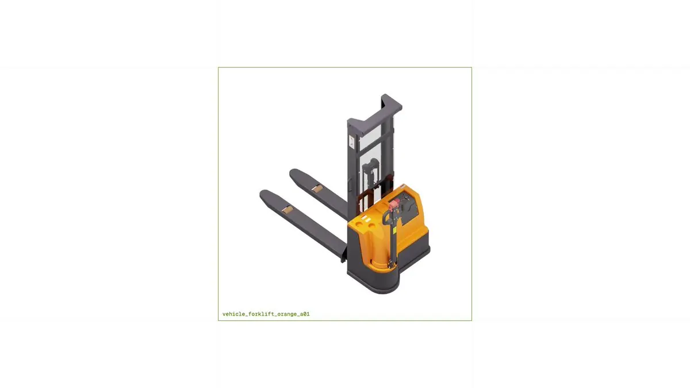

vehicle_forklift_orange_a01。视频源自 Hugging Face 的 Caleb Fahlgren 发布帖。原帖（照录）
Hugging Face 刚刚支持 OpenUSD ，NVIDIA 反手就甩出 2500+ 个 SimReady 3D 资产：叉车、机械臂、发动机、医疗设备……全部免费放在 Hub 上，还能直接用大白话搜！
以前搭一个仿真场景要建模好几周，现在点几下就能拿到。
具身智能的门槛也在松动。机器人时代不远了。🤖🔥
— 洛克船长（@slashui），2026-10-23。附视频 1920×1080、33 秒；引用了 Caleb Fahlgren（@calebfahlgren，Hugging Face）的英文发布帖。作者在本帖下没有自回复/续帖。
被引用的发布帖（短引）
Caleb 的原帖（2026-10-23 00:35 SGT，约 2.7 万浏览、597 赞、719 收藏）核心一句是 “We just launched OpenUSD support on the @huggingface Hub”，并说 @nvidiaomniverse 前一天放上了 “2,500+ SimReady assets”，可以 “search the whole library in plain English”。他在续帖里补了两点：
- Hub 上的 3D 查看器是开源的：用 Rust 做 USD 合成（composition）、编译成 WASM、用 three.js 渲染，可以嵌入自己的应用——即 npm 包
@huggingface/usd-web-viewer（MIT，全文翻译见附录）。 - 文档 Hub · 3D Dataset 与他整理的 OpenUSD 数据集合集。
这是什么：SimReady Central
- Hub 原生认 3D 了。在数据集、模型或 Storage Bucket 的 Files 页点开
.usd/.usda/.usdc/.usdz或.glb/.gltf，会直接弹出可旋转、缩放、全屏的 3D 查看器；含 SimReady 包的数据集页还会出现 “3D Assets” 卡片，显示包数与最多 15 张缩略图。带 3D 文件的数据集自动获得3d模态标签。 - NVIDIA 的资产库。主数据集 nvidia/simready-assets 页面显示 2,575 个资产、总计约 472 GB，示例包括 CT 注射系统、瓦楞纸箱、移动推车、发动机总成、香蕉番茄、手术器械、劳保手套、排放测试仪等；不需要申请访问（ungated）。
- “SimReady” ≠ 好看的模型。NVIDIA 博客的说法是：仿真需要的不只是 3D 外形，还要 “collision geometry, mass, and friction” 等属性。SimReady 资产是按 SimReady Foundation 的规范与 profile（按用途分组的能力要求）预先补好这些属性的 OpenUSD 资产：碰撞几何与物理属性、关节结构与限位、语义标签、材质与传感器属性等。
- 大白话搜索。SimReady Central USD Search 这个 Space 由 NVIDIA USD Search 驱动（README 写明后端是 OpenSearch + Neo4j + Redis + SigLIP2 向量），可以用自然语言找资产；Hugging Face 也把 USD 属性与仿真元数据接进了站内搜索，方便 AI 智能体检索。
- OEM 生态。博客点名了 Vertiv（机柜、服务器机架、冷却设备）、Comau / FANUC / Franka / Robotiq / Standard Bots / Universal Robots（机械臂与夹爪）、Palatial（NVIDIA Robotics 1K 数据集）、LG 电子（冰箱洗碗机等家居资产）、ForgeCAD 等；厂商用 “submission skill” 校验、打包、提交资产，并自己管理各自的 HF 数据集。
官方示例工作流（概述）
- 机器人抓取放置：让前沿模型（博客举的是 GPT-6 Astra）通过 SimReady 搜索找到 FANUC 机械臂 + 兼容的 Robotiq 夹爪 + 仓储资产，引用进 OpenUSD stage，生成 Isaac Sim / PhysX 的 Python 装配脚本，渲染预览，并记录资产与运行时版本以便复现。
- AI 工厂布局对比：用机架与冷却设备生成两套布局，按给定尺寸和通道净距检查重叠与违规，各存为 OpenUSD 场景。
- 延伸：把布局和任务改动放在独立 USD 层以复用素材；变换摆位做评测；机器人训练接 Isaac Lab；AI 工厂接 BMS/IT 遥测做数字孪生。
核实与补充
- 数量：帖子说 “2500+”，数据集页实计 2,575；NVIDIA 博客（2026-10-21）写的是 “more than 2,000”，应为发布时口径。
- 免费 ≠ 许可清楚：截至 2026-10-23，
nvidia/simready-assets显示 “No dataset card yet”，页面上看不到许可证。可免费下载，但商用、再分发前应逐个核对资产或 OEM 数据集的条款。 - “几周→点几下”：能省掉的是找模型、补碰撞/质量/摩擦这类手工活；场景装配、任务设计、Sim2Real 仍是工作量大头。评论区 @silic2023 也提醒：要先问 “Ready for what?”——布局规划和接触物理需要的资产属性不一样。
- 体量：472 GB 不适合整库拉取，按搜索结果逐包下载更现实；USD 资产往往由根文件 + 子层/payload/贴图组成，需保持相对路径。
评论区观点
- 原帖下仅 2 条回复：@btc5767 说 “赚钱的本质就是解决别人的问题”；@CeoSpaceY 追问 “不远是多远？”——对“机器人时代不远了”的温和质疑。
- Caleb 发布帖下：@TheTrentHarvey 坦言一开始以为 USD 是“美元”（Caleb 回了 openusd.org 链接，可见名字本身就是门槛）；@3DPrintAficio 表示要先拿机械臂做工位仿真再打印支架；@infoforuzy 认为“找资产会容易得多”；@silic2023 的 “Ready for what?” 是最有信息量的一条。
启发
- Hugging Face 正把“模型/数据集托管”扩到“物理世界资产托管”，OpenUSD 成为具身智能数据的通用容器；对做机器人、数字孪生的小团队，素材冷启动成本确实下降了。
- “SimReady”的价值在于把物理语义标准化（profile + 校验工具），而不只是更多模型——选资产时先对照自己的 profile 需求。
- 开源的
usd-web-viewer本身就很实用：任何网页都可以零后端预览 USD，可用于资产审阅、作品集或 AI 生成场景的结果展示。
链接
- 原帖：@slashui · 发布帖：@calebfahlgren
- NVIDIA 博客：Announcing SimReady Central（Hugging Face 社区文章，2026-10-21）
- 数据集：nvidia/simready-assets · 搜索：SimReady Central USD Search
- 文档：Hub 3D Dataset · OpenUSD
- 本站相关：用 Opus 5.5 / Astra + Tripo 制作 3D 游戏 · Motion2MixamoRig：视频一键生成绑骨角色 · 洛克船长推荐的 Motion Prompt 动效库
附录：@huggingface/usd-web-viewer README 全文翻译（MIT）
原文：npm · @huggingface/usd-web-viewer v0.1.1，仓库 huggingface/huggingface.js，MIT 许可。代码块保持原样。
@huggingface/usd-web-viewer
在浏览器里运行 OpenUSD：USD 合成在 WebAssembly 中完成，基于 openusd（纯 Rust），用 three.js 渲染。可读取 .usd、.usda、.usdc 和 .usdz；加载在 Web Worker 中运行。
npm install @huggingface/usd-web-viewer three用法
现成的查看器（渲染器、灯光、轨道控制）：
import { createViewer } from '@huggingface/usd-web-viewer';
const viewer = createViewer(document.getElementById('viewer')); // a container element
const { info } = await viewer.load(
'https://huggingface.co/datasets/Robotiq-Official/simready-assets/resolve/main/Robotiq_2F_85/simready_usd/Robotiq_2F_85.usda',
);或者加载到你自己的 three.js 场景中：
import { loadUsd } from '@huggingface/usd-web-viewer';
const { root, complete, dispose } = await loadUsd(url);
scene.add(root); // a THREE.Group, Y-up, in meters
await complete; // textures stream in after the geometry（注释大意：root 是一个 THREE.Group，Y 轴朝上，单位为米；几何体加载完后贴图再流式载入。）
选项
loadUsd(url, options) 和 viewer.load(url, options) 接受：
| 选项 | 默认值 | 说明 |
|---|---|---|
textures | 'preview' | 'none'、'preview'（基础色、小尺寸数据贴图，不含法线贴图）或 'full' |
maxTextureSize | 1024 | 解码后贴图长边的像素数 |
signal | 一个 AbortSignal；加载会以 code 为 aborted 的 UsdLoadError 拒绝 | |
onProgress | 回调参数为当前阶段和 0 到 1 的整体进度 fraction | |
files | 从拖入或选取的文件加载，而不是走网络（见下文） | |
wasmUrl、workerUrl | 与包同目录 | WASM 二进制与 worker 脚本的服务地址 |
maxConcurrentFetches | 16 | 同时进行的请求数 |
maxLayerBytes、maxLayers | 768 MiB、1024 | 图层下载上限 |
maxTextureBytes | 512 MiB | 贴图下载上限 |
maxTriangles、maxInstances | 2000 万、100,000 | 最多绘制的数量 |
createViewer(container, options) 接受 background（默认透明）、onContextLost 和 onContextRestored（调用时会重新加载上次显示的模型）。
失败时抛出带 code 的 UsdLoadError（aborted、fetch、compose、worker、webgl）；任何无法如实显示的内容都会列在 info.warnings 中。所有选项、错误和警告都有类型定义。
加载不受信任的文件
- 请求的发送方式与
<model-viewer>相同：cookie 只发往页面自身的源（credentials: 'same-origin'），不带自定义请求头，不带 referrer。 - 图层和贴图只通过 http(s) 获取。
- 解析在编译为 WebAssembly 的 Rust 中进行，运行于 Web Worker。
- 每次加载都有上限：
maxLayerBytes（768 MiB）、maxLayers（1024）、maxTextureBytes（512 MiB）、maxTriangles（2000 万）和maxInstances（100,000）；图片单边最大 16384 px、面积最大 8192 × 8192 px；prim 嵌套最多 256 层；.usdz内单个条目最大 512 MiB、合计最大 1 GiB，且须为未压缩存储。 - 格式错误的文件会以
UsdLoadError使加载失败。
本地文件
要显示拖到页面上或通过 <input type="file" webkitdirectory> 选取的文件，把它们作为 files 传入，以它们在包内的路径为键，然后加载根图层对应的键。文件中的相对路径会彼此解析，不会为它们发起任何网络请求。
const files = new Map([...input.files].map((file) => [file.webkitRelativePath || file.name, file]));
await viewer.load('chair/simready_usd/sm_chair.usd', { files });打包工具
worker 与 WASM 二进制通过 new URL(..., import.meta.url) 定位，Vite、webpack 等打包工具会解析并输出它们。使用 Vite 开发服务器时，请把该包排除在依赖预打包之外：
// vite.config.js
export default { optimizeDeps: { exclude: ['@huggingface/usd-web-viewer'] } };以 MIT 许可发布。编译进 WASM 二进制的 Rust crate 的许可证见 THIRD_PARTY_LICENSES。